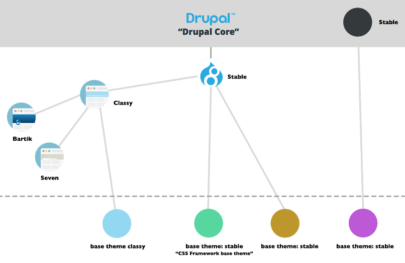
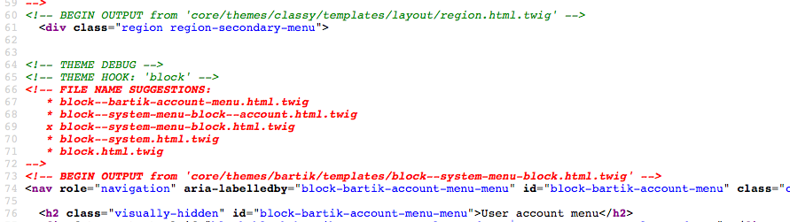

D7 to D8 Theme Crash Course
Vancouver Drupal Users Group
By Leah Wagner // d.o: leahtard // @leahamwagner
&
Joël Pittet // d.o: joelpittet // @joelpittet
Leah Wagner
- Frontend developer at The Jibe
- Started in design but grew to love code
- I ♥ clean markup & modular maintainable code
- Witbeir, red wine, running and rock & roll
Joël Pittet
- Drupal 8 Theme System co-maintainer
- Likely in your issue queues
- Full-stack web dev (aka: messin' about)
- Plays plenty of rec soccer
What we will be covering
- THE PIPELINE
- FILE CHANGES
- Name changes and the new info file
- BASE THEMES
- Classy, Stable & Strak
- TEMPLATES
- php template > Twig!
- LIBRARIES
- Libraries and attached assets
- BLOCKS
- New deafult theme blocks
- THEME HOOKS
- New templates and suggestions
- SMACSS & BEM
- Folder structure and naming convetions
- DEBUG
- AUTO-ESCAPING
Conventions
Uppercase words are replaced as follows:
- THEME
- Name of your theme
eg. basic/omega/custom_theme - MODULE
- Name of your module
eg. panels/context/custom_module - HOOK
- Name of a theme hook aka template file.
eg. field/page/node/item_list
The Pipeline
The Pipeline
- DEFINE
- MODULE_theme()
- BUILD
- theme('HOOK') OR
render array('#theme' => 'HOOK') - MODIFY
- THEME_template_preprocess_HOOK
- FLATTEN
- THEME_template_process_HOOK
- MARKUP
- HOOK.tpl.php OR THEME_HOOK()
- DEFINE
- MODULE_theme()
- VARY
- THEME_theme_suggestions_HOOK_alter()
- BUILD
- render array: ['#theme' => 'HOOK']
- MODIFY
- THEME_template_preprocess_HOOK
- MARKUP
- HOOK.html.twig
File Changes
Directory Changes
- includes
- misc
- modules
- profiles
- scripts
- sites
- all
- modules
- themes
- libraries
- all
- themes
- core
- modules
- profiles
- sites
- themes
Name Changes
THEME.info
template.php
TEMPLATE.tpl.php
THEME.info.yml
THEME.theme
TEMPLATE.html.twig
THEME.libraries.yml
Info File
name = Basic
description = HTML5 and SASS theme.
core = "7.x"
project = "basic"
; Regions
regions[header] = Header
regions[content] = Content
regions[footer] = Footer
; Stylesheets
stylesheets[all][] = css/style.css
stylesheets[print][] = css/print.css
; Scripts
scripts[] = js/build/scripts.js
name: Basic
description: HTML5 and SASS theme.
type: theme
core: 8.x
# Regions
regions:
header: Header
content: Content
footer: Footer
# Scripts & Styles
libraries:
- basic/global
Base Themes
Base Themes
Templates
Templates
TEMPLATE.tpl.php
TEMPLATE.html.twig
node.tpl.php
field.tpl.php
node.html.twig
field.html.twig
Twig Syntax
{% if trees %}
{#
This is where we loop through
the list of trees.
#}
{% for tree in trees %}
-
{{ tree.type|upper }}:
{{ tree.branches }}
{% endfor %}
{% endif %}
Twig Syntax
{% set greeting = 'Hello ' %}
{% set name = 'Drupalistas' %}
{{ greeting ~ name|lower }}
{# Hello drupalistas #}
{% set value = 'no spaces' %}
{#- No leading/trailing whitespace -#}
{%- if true -%}
{{- value -}}
{%- endif -%}
{# output 'no spaces' #}
Templates
Attributes
Attributes
Do's
Don'ts
Libraries
Libraries
Libraries
Libraries
#attached Assets
Attach the assets to the elements which need them.Blocks
Blocks
Theme Hooks
Preprocess
DIDN'T CHANGE!Suggestions
SMACSS & BEM
SMACSS
Folder structure for CSS
- Base
- Layout
ModulesComponents- State
- Theme
Read more: https://www.drupal.org/node/1887922
https://smacss.com/
BEM CEM
Read more: https://en.bem.info/
Debug
Enable Debug
Source Output
 dump() devel module's kint() drupal site:mode devAuto-Escaping
Auto-Escaping
The user decides to set his first name to:<script>alert('I CAN HAZ UR SITE')</script>Un-escaping
You need the variable's markup or know it's previously sanitized user input.Questions?
defmodule Math do
def sum(a, b) do
a + b
end
end
Fragments
Hit the next arrow...
... to step through ...
... a fragmented slide.
Fragment Styles
There's different types of fragments, like:
grow
shrink
fade-out
current-visible
highlight-red
highlight-blue
Transition Styles
You can select from different transitions, like:
None -
Fade -
Slide -
Convex -
Concave -
Zoom
Themes
reveal.js comes with a few themes built in:
Black (default) -
White -
League -
Sky -
Beige -
Simple
Serif -
Blood -
Night -
Moon -
Solarized
Slide Backgrounds
Set data-background="#dddddd" on a slide to change the background color. All CSS color formats are supported.
Image Backgrounds
<section data-background="image.png">Tiled Backgrounds
<section data-background="image.png" data-background-repeat="repeat" data-background-size="100px">Video Backgrounds
<section data-background-video="video.mp4,video.webm">... and GIFs!
Background Transitions
Different background transitions are available via the backgroundTransition option. This one's called "zoom".
Reveal.configure({ backgroundTransition: 'zoom' })Background Transitions
You can override background transitions per-slide.
<section data-background-transition="zoom">Pretty Code
function linkify( selector ) {
if( supports3DTransforms ) {
var nodes = document.querySelectorAll( selector );
for( var i = 0, len = nodes.length; i < len; i++ ) {
var node = nodes[i];
if( !node.className ) {
node.className += ' roll';
}
}
}
}
Code syntax highlighting courtesy of highlight.js.
Marvelous List
- No order here
- Or here
- Or here
- Or here
Fantastic Ordered List
- One is smaller than...
- Two is smaller than...
- Three!
Tabular Tables
| Item | Value | Quantity |
|---|---|---|
| Apples | $1 | 7 |
| Lemonade | $2 | 18 |
| Bread | $3 | 2 |
Clever Quotes
These guys come in two forms, inline:
“The nice thing about standards is that there are so many to choose from”
and block:
“For years there has been a theory that millions of monkeys typing at random on millions of typewriters would reproduce the entire works of Shakespeare. The Internet has proven this theory to be untrue.”
Intergalactic Interconnections
You can link between slides internally, like this.
Speaker View
There's a speaker view. It includes a timer, preview of the upcoming slide as well as your speaker notes.
Press the S key to try it out.
Export to PDF
Presentations can be exported to PDF, here's an example:
Global State
Set data-state="something" on a slide and "something"
will be added as a class to the document element when the slide is open. This lets you
apply broader style changes, like switching the page background.
State Events
Additionally custom events can be triggered on a per slide basis by binding to the data-state name.
Reveal.addEventListener( 'customevent', function() {
console.log( '"customevent" has fired' );
} );
Take a Moment
Press B or . on your keyboard to pause the presentation. This is helpful when you're on stage and want to take distracting slides off the screen.
Much more
- Right-to-left support
- Extensive JavaScript API
- Auto-progression
- Parallax backgrounds
- Custom keyboard bindings